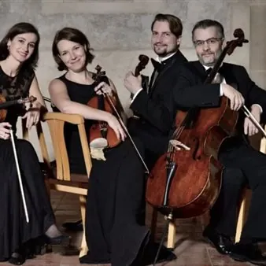

mer 25 nov · dalle 20:30
Teatro Miela - Quartetto Škampa
Il QUARTETTO ŠKAMPA è da 25 anni una fra le formazioni da camera più raffinate che rappresentano, nelle sale da concerto di tutto il mondo, la cultura musicale ceca. Attraverso i loro mentori, i leggendari membri del Quartetto Smetana, lo Škampa affonda le proprie radici nella…
 Indicazioni
Indicazioni
- Costi e prenotazioni
- Costo non indicato · Prenotazione non indicata
- Programma
- Programma da verificare. Apri la fonte ufficiale per orari e possibili aggiornamenti.
- In caso di maltempo
- Nessuna indicazione specifica pubblicata.
- Note
- Acquisito automaticamente dalla fonte.
L’EVENTO
Descrizione completa
Il QUARTETTO ŠKAMPA è da 25 anni una fra le formazioni da camera più raffinate che rappresentano, nelle sale da concerto di tutto il mondo, la cultura musicale ceca. Attraverso i loro mentori, i leggendari membri del Quartetto Smetana, lo Škampa affonda le proprie radici nella tradizione dei più antichi Quartetti, come quello Boemo. A questa innata musicalità, i membri della formazione hanno aggiunto la personale ricerca per la comprensione e l’interpretazione della poetica delle canzoni popolari, delle danze e dei ritmi da cui la loro tradizione musicale si è sviluppata, esemplarmente manifestata nelle loro incisioni delle opere di Janáček e, in particolare, di Smetana, veri e propri punti di riferimento. I frutti di questo lavoro interpretativo emergono anche nelle produzioni discografiche dedicate alle radici morave della poetica di Janáček, realizzate in collaborazione con la cantante I. Bittová, e particolarmente apprezzate anche al di fuori dei confini nazionali. Riconoscimenti in Concorsi Internazionali, Premi assegnati dalla Royal Philharmonic Society, Quartetto in residenza alla Wigmore Hall (il primo Quartetto in residenza alla Wigmore Hall, un fatto senza precedenti nella storia di questa celebre istituzione musicale inglese) hanno contribuito a consolidare il profilo artistico del Quartetto Škampa, invitato altresì nei maggiori Festival internazionali, quali ad esempio la Primavera di Praga, Schwentzingen, Edimburgo, Schleswig-Holstein e Melbourne. Grazie anche a queste opportunità artistiche, lo Škampa ha potuto collaborare con interpreti quali M. Tan, I. Golan, J. Suk, M. Collins, K. Stott e J. Jansen, fra gli altri. Fin dagli esordi della loro attività, questo ensemble ha coltivato una particolare relazione con la BBC Radio 3, che ha prodotto varie registrazioni dalla Wigmore Hall, da St John’s Smith Square, dai Proms. Il Quartetto ha ricevuto il Premio dalla Casa discografica Supraphon e le sue incisioni dal vivo nella celebre sala londinese della Wigmore Hall sono state scelte per essere pubblicate dall’etichetta Wigmore Hall Live. L’insegnamento ha sempre rivestito una particolare importanza nell’attività complessiva del Quartetto ceco. Sono molte le sedi internazionali che li hanno ospitati come docenti, in modo particolare la Royal Academy of Music di Londra, presso la quale il Quartetto ha ricoperto il ruolo di Docente ospite per la Musica da camera.
Chamber Music Trieste Per informazioni e biglietti:
Chamber Music Trieste – tel:+39 040 3480598,
e-mail:info@acmtrioditrieste.it prevendita online: https://biglietteria.ticketpoint-trieste.it/
IL PROGRAMMA
Programma e orari
Appuntamenti raccolti dalle fonti elencate. Dove manca un orario, non è ancora disponibile in questa scheda.
Programma pubblicato
- Dal 2026-11-25 al 2026-11-25
INFORMAZIONI UTILI
Prima di partire
- Controllare la fonte prima di partire.
ORGANIZZAZIONE